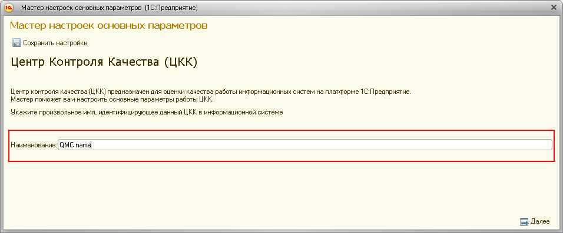
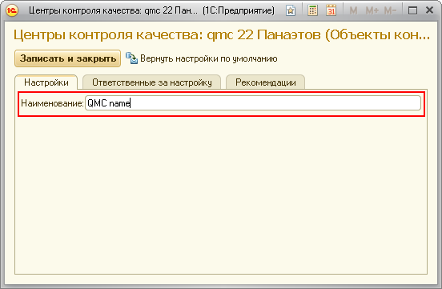

Данная форма позволит вам заполнить настройки внешнего Центра Контроля Качества.
Изначально в ЦКК определен один внешний Центр Контроля Качества: "Центр Контроля Качества 1". При начале работы с системой автоматически создаётся задача по настройке объекта для роли "Ответственный за периметр контроля".
Для регистрации нового ЦКК установите курсор на вершине дерева "Центры контроля качества" и нажмите кнопку "Добавить" на контрольной панели дерева или в контексном меню, которое открывается при щелчке правой кнопкой мыши на нужной вершине дерева.
Данный объект описывает внешний по отношению к текущему ЦКК Центр Контроля Качества, работоспособность которого мы контролируем. Каждый ЦКК имеет наименование, которое должно однозначно определять его в информационной системе и которое задаётся при первоначальной настройке. Наименование используется при контроле работоспособности ЦКК. Необходимо, чтобы значение данной настройки и наименование, указанное при настройке контролируемого ЦКК, совпадали.


Общий подход к повышению качества: